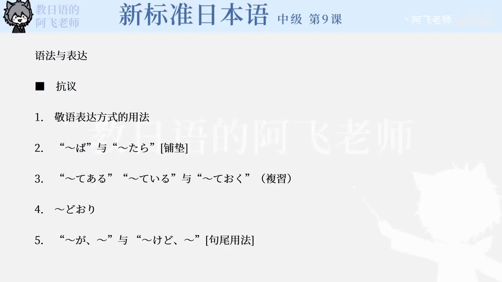

Bilibili P144 · Dialogue Reading
トラブル
机场里同时发生“行李迟迟不出”和“接人接不到”的麻烦。通过王、山田与机场工作人员的对话，练习投诉、查询、道歉、催促和服务敬语。
全篇听力精讲
按 12 句会话轮播。每句依次播放课文原句、中文意思、整句结构、断句、语法和词汇。
这段会话在讲什么
王的行李问题行李迟迟不出来，从委婉说明逐渐升级为催促。
山田的接人问题航班已到，但人未出现，于是机场职员提出广播呼叫。
服务敬语链柜台人员用道歉、查询、等待请求和送达承诺来处理投诉。
对话推进链
1 · 发现异常荷物が出てこない
2 · 查询特征どのようなお荷物
3 · 航班确认予定通り到着
4 · 投诉升级いつまで待てば
5 · 后续解决ホテルに届ける
逐句精读
重点语法与表达
机场服务词汇
练习与复习
来源说明：视频标题、时长、CID 和首帧来自 Bilibili 公开视频接口；课文原文来自本地《新标准日本语》中级第9课教材数据，并修正明显录入误差用于学习，例如「という」「申し訳ありません」「待てば」「お泊まり」。